9.2 SQLite
SQLite是一个开源的C语言数据库引擎.
去微软下载之后把两个脚本丢进去就可以使用了
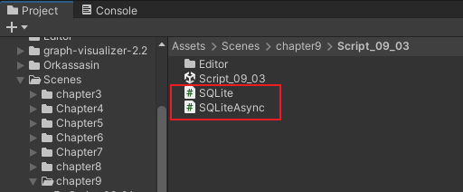
创建数据库,采用异步的方法
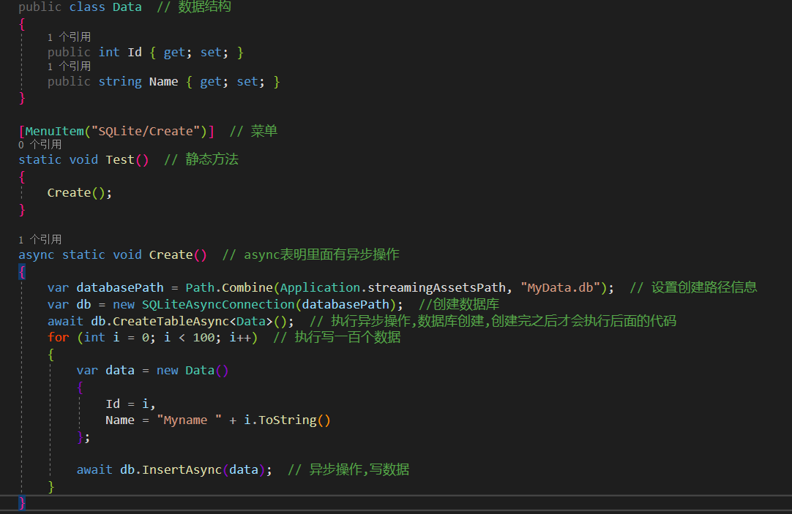
数据库就拿到了,使用SQLiteStudio打开看是都有了
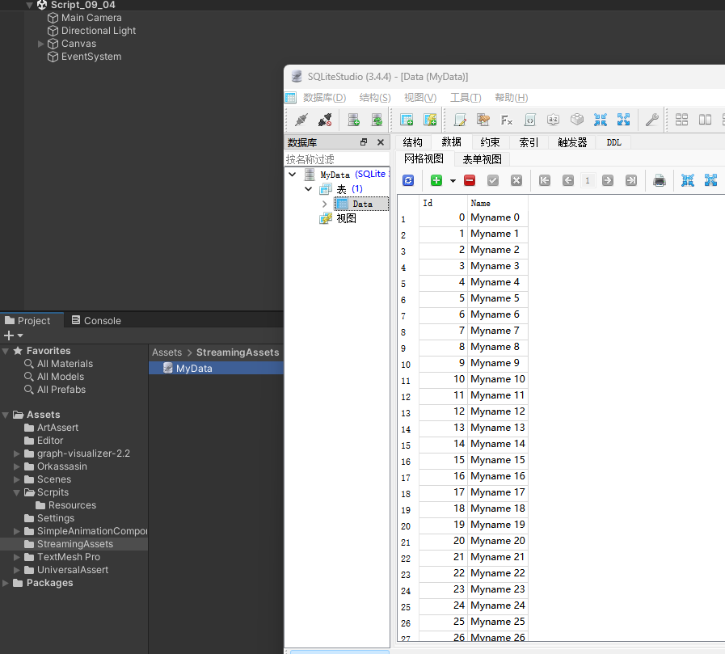
SQLite数据可以直接使用原生的方法调用,需要extern关键字并且配合DLLImport操作数据库,为了让本地编辑器可以直接操作,下载对应平台的库文件
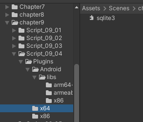
读取数据库,指定ID为18的数据
底层的SQL语句都是支持的,所以Insert,Get,Table,Delete,Query,Execute这些操作都是可以执行的
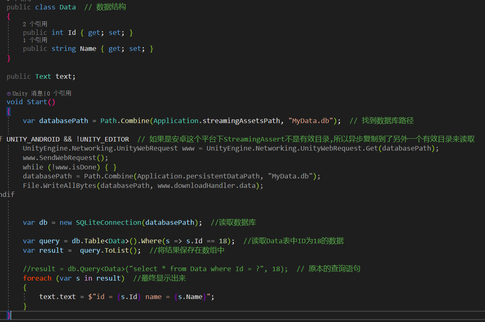
9.3 Json
JSON是一种轻量的数据保存格式,Unity内置了JsonUtility工具类来处理,也支持使用功能.NET的JSON库,安装NewtonsoftJson包即可.
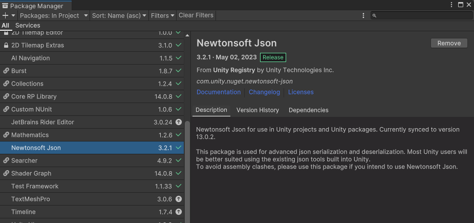
游戏运行时是无法通过EPPlus读取Excel的.所以就需要保存成CSV,JSON和ScriptableObject等格式.Unity支持JSON的序列化和反序列化,序列化的类上方必须进行序列化声明.调用ToJson和FromJson进行序列化和反序列化.
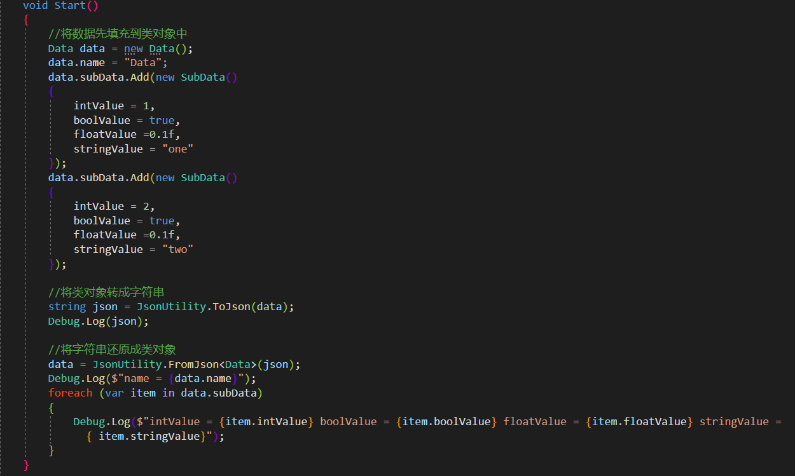
需要写好对应的数据结构类型,然后就支持序列化和反序列化了
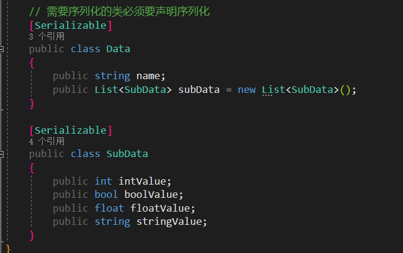
Unity的JSON不支持字典,不过可以通过继承ISerializationCallbackReceiver接口来间接实现字典序列化.
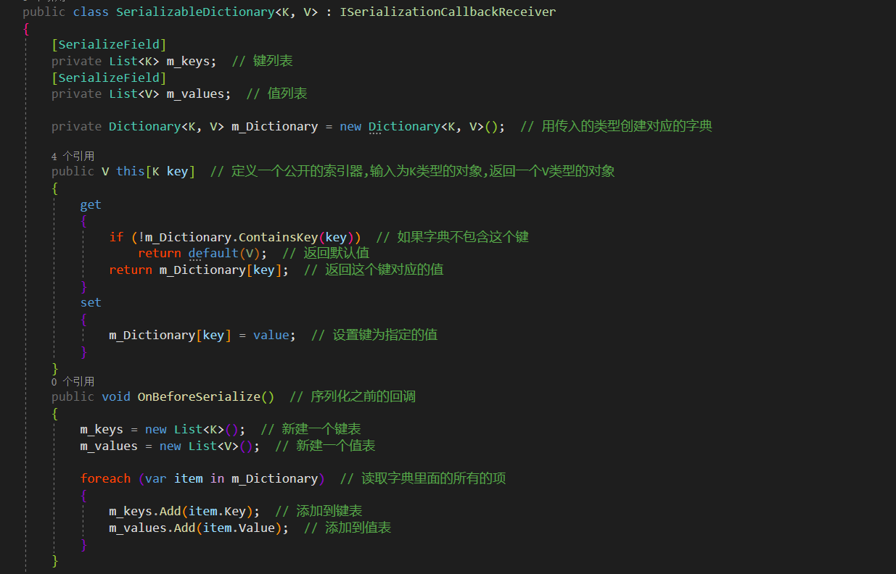
核心逻辑是通过键表和值表来存储和转换
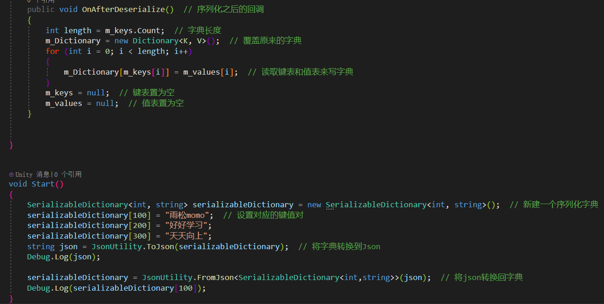
Unity自带的这个JsonUtility有一个很讨厌的事情,就是要提前声明所有类的序列化,但是如果JSON结构还没有明确的类结构,就不行了,所以NET的就很好用了,可以动态解析JSON
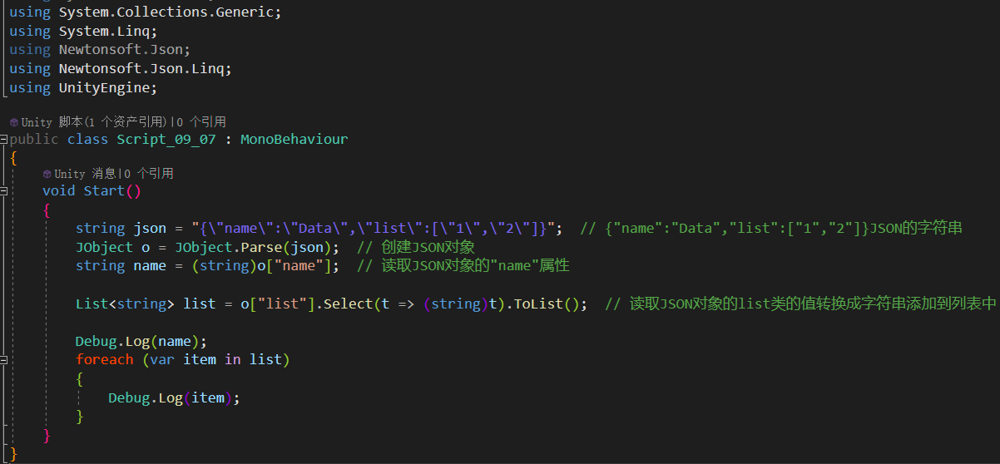
9.4 文件的读取和写入
游戏中很多数据需要在运行期间读取或者写入,Unity自己提供了一套API-PlayerPrefs,但是功能比较单一,只支持Int,float和string三种类型.
PlayerPrefs是Unity自带的方法,Unity引擎已经封装好了GetKey和SetKey方法,并且在保存数据方面做了优化.Unity默认会在应用程序即将切入后台时统一保存文件,开发者也可以强制调用PlayerPrefas.Save()来保存文件
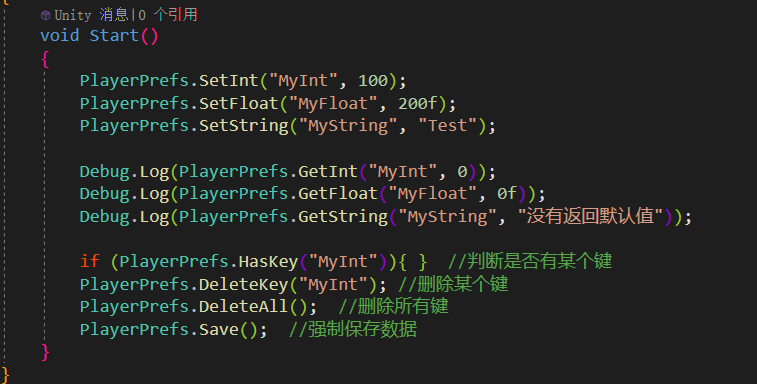
文件保存在注册表当中
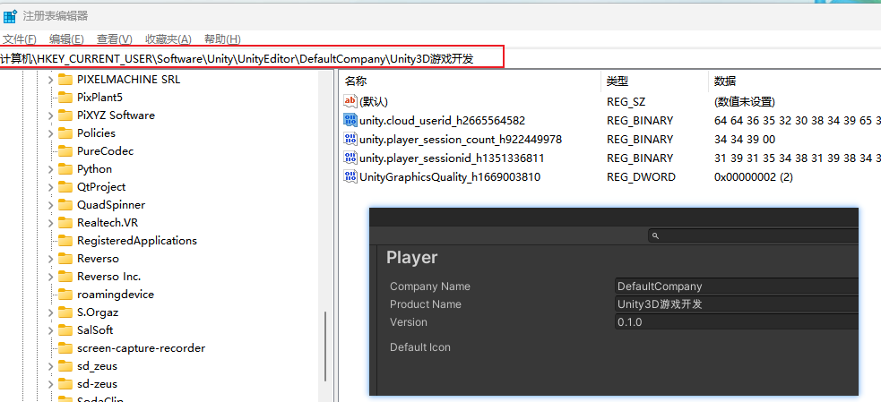
在不同的平台有不同的存储路径
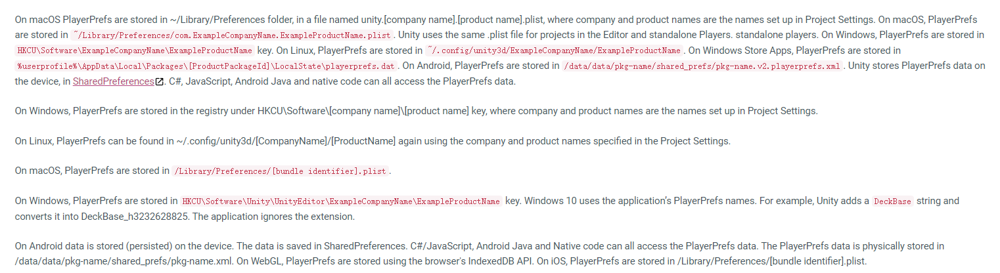
Unity提供的另外一组存档功能柜,因为是编辑器模式下使用的,所以不考虑性能,是会立即保存的.
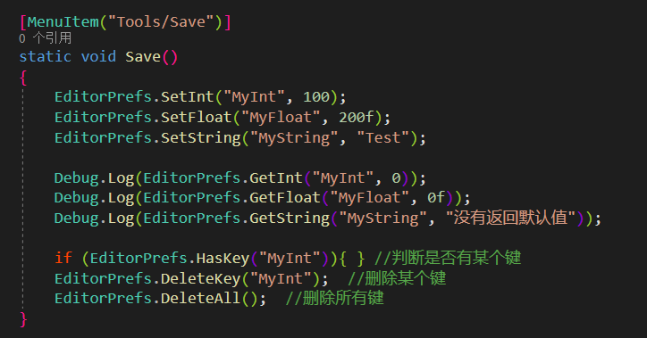
9.4.3 用PlayerPrefs保存复杂的数据结构
PlayerPrefs可以存储字符串,我们将复杂的结构先转换成JSON的字符串格式,然后再存进去,就实现了使用PlayerPrefs存储复杂数据的功能了
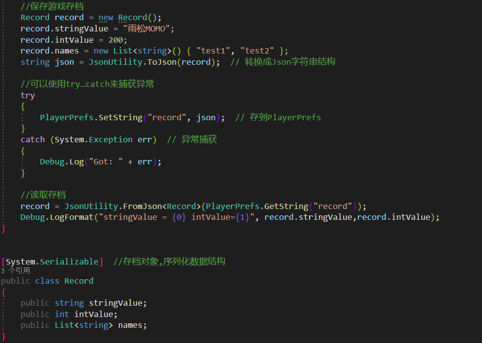
案例:有一个游戏有统一ID,然后游戏更新之后需要更换Key,所以就需要先获取新的Key,找不到再获取旧的Key,最后在有新Key之后再统一删除旧Key,这种保存在本地的操作都是有一定风险的,.所以重要数据尽量不要保存本地.
通过File实现文本的读和写
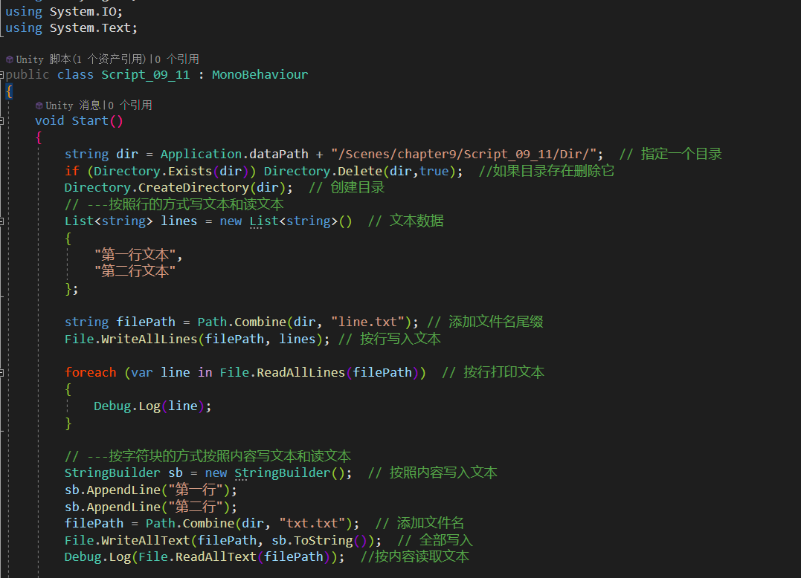